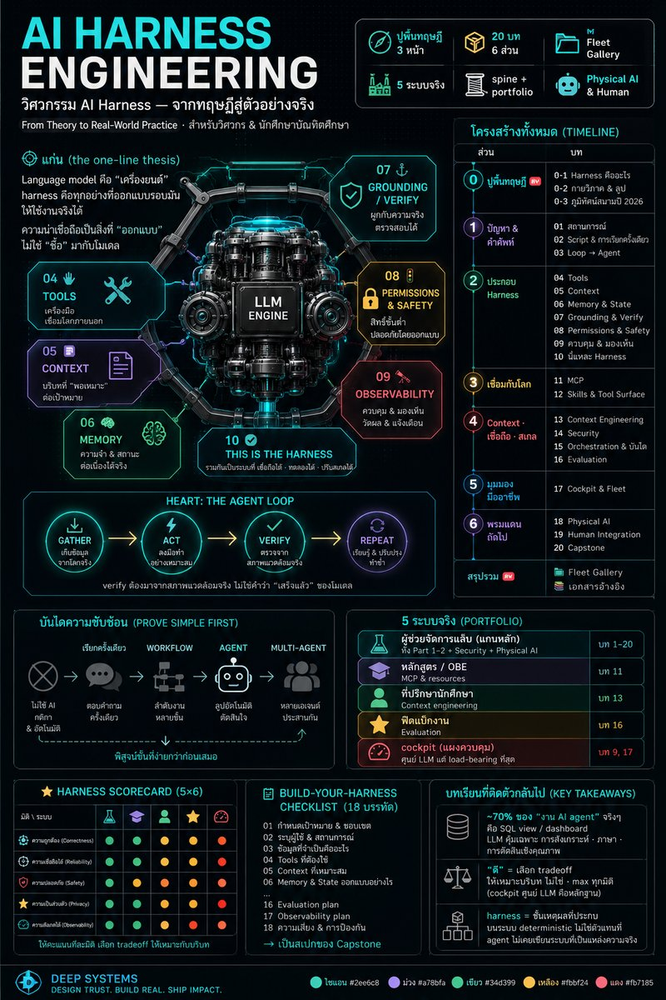

AI Harness Engineering
วิศวกรรม AI Harness
Language Model คือ "เครื่องยนต์" — สิ่งที่ทำให้มันกลายเป็น AI Agent ที่เชื่อถือได้พอจะใช้งานจริง คือ harness ที่ออกแบบรอบ ๆ มัน คู่มือนี้พาคุณ สร้างผู้ช่วยจัดการแล็บหนึ่งตัว จาก script ธรรมดา จนกลายเป็น agent ระดับ production — แล้วต่อยอดด้วยอีก 4 ระบบจริง เพื่อให้ได้ทั้ง แนวคิด และ ไอเดียที่เอาไปใช้ได้

📋 โปสเตอร์สรุปทั้งคอร์ส — คลิกเพื่อดูขนาดใหญ่
วิธีเล่าของคู่มือนี้
เราจะไม่ยัดหัวข้อทีละก้อนแบบไม่ปะติดปะต่อ แต่จะ เล่าเป็นเรื่องเดียวที่ค่อย ๆ โต: เริ่มจากสถานการณ์จริงของการดูแลแล็บ → เขียน script ง่าย ๆ → มันไม่พอ → เติมทีละชิ้นจนกลายเป็น harness ที่ครบ ศัพท์ทุกคำจะโผล่มาตอนที่เรื่องราว "ต้องใช้" มันพอดี ไม่ใช่ท่องนิยามลอย ๆ
หลักคิดของคอร์ส — spine + portfolio: ใช้ตัวอย่างเดียว (ผู้ช่วยจัดการแล็บ) เป็นแกนหลักในช่วงปูพื้น
เพื่อให้ความรู้ต่อเนื่องลื่นไหล แล้วในหัวข้อขั้นสูงค่อยหยิบ "ระบบจริงที่เหมาะกับเรื่องนั้นที่สุด" มาเป็นกรณีศึกษา —
ได้ทั้งแนวคิดและไอเดียจาก 5 ระบบ
อยากเห็น "ภาพทฤษฎี" ก่อนลงมือไหม? — เราเพิ่ม ส่วนปูพื้นทฤษฎี (0·1–0·3) ไว้ข้างหน้า
สำหรับคนที่ชอบรู้ นิยามและคำศัพท์ของ "harness" จากบนฟ้าก่อน แล้วค่อยลงไปสร้างจริง · ถ้าคุณชอบเรียนจาก
เรื่องเล่ามากกว่า ข้ามไปเริ่มที่ บทที่ 01 ได้เลย แล้วค่อยกลับมาอ่านส่วนนี้เป็นบทสรุป — สองทางไปถึงที่เดียวกัน
เนื้อหาทั้ง 6 ส่วน (+ ปูพื้นทฤษฎี)
🧭 ส่วนที่ 0 — ปูพื้นทฤษฎี · แผนที่ก่อนออกเดินทาง (อ่านก่อนหรือข้ามไปก่อนก็ได้)
ทฤษฎี 0·1
Harness คืออะไร
โมเดล = เครื่องยนต์ · harness = ทุกอย่างที่ออกแบบรอบมัน · นิยามสนามปี 2026 · "ความน่าเชื่อถือออกแบบได้ ไม่ใช่ซื้อมา"
ทฤษฎี 0·2กายวิภาค & ลูป
ลูป gather→act→verify→repeat เป็นหัวใจ · ชิ้นส่วนที่ตั้งชื่อได้ (= บท 04–10) · บันไดความซับซ้อน
ทฤษฎี 0·3ภูมิทัศน์สนามปี 2026
แผนที่คำศัพท์: context engineering · MCP · Skills · tools · orchestration · eval · security — แต่ละคำคู่กับบทที่ลงลึก
🔹 ส่วนที่ 1 — ปัญหา & คำศัพท์ · แกนหลัก: ผู้ช่วยจัดการแล็บ
บทที่ 01
สถานการณ์
รู้จักผู้ช่วยจัดการแล็บ — คำถามประจำวัน ข้อมูลที่มี เป้าหมาย: เครื่องมือที่ "ไว้ใจให้ใช้งานจริง" ได้ (ยังไม่มี AI)
บทที่ 02Script & การเรียกครั้งเดียว
script ที่แข็งทื่อ → เติม LLM call → "prompt-and-pray" ที่เดา ลืม และค้นอะไรไม่ได้
บทที่ 03Loop → Agent
gather → act → verify → repeat · จุดที่มันกลายเป็น "agent" จริง ๆ
🔹 ส่วนที่ 2 — ประกอบ Harness ทีละชิ้น · แต่ละชิ้นแก้ failure ที่เพิ่งเห็น
บทที่ 04
Tools — มือ
มันต้อง "ดึง" ข้อมูลจริง ไม่ใช่เดา
บทที่ 05Context — สิ่งที่ต้องรู้
กติกาแล็บ คาบเรียน วันหยุด ช่วงซ่อมบำรุง
บทที่ 06Memory & State
"แล้วพรุ่งนี้ล่ะ?" ต้องจำเรื่องก่อนหน้าได้
บทที่ 07Grounding & Verify
มันสร้างห้องที่ไม่มีจริง · ตอบจากข้อมูลจริงเท่านั้น ตรวจจากสภาพแวดล้อม
บทที่ 08Permissions & Safety
ถามว่า "ว่างไหม" แต่มันไปจองให้ · อ่าน vs ทำ · gate สิ่งที่ย้อนไม่ได้
บทที่ 09ควบคุม & มองเห็น
query ค้าง (เพดานเวลา/รอบ) · ตอบผิดแล้วดูไม่ออกว่าทำไม (trace)
บทที่ 10นี่แหละ Harness
ตั้งชื่อทุกชิ้นรวมกัน = harness · เริ่ม Harness Scorecard
🔸 ส่วนที่ 3 — เชื่อมกับโลกภายนอก
บทที่ 11
MCP — โปรโตคอลการเข้าถึง
host/client/server · tools / resources / prompts
บทที่ 12Skills & Tool Surface
แพ็กวิธีทำซ้ำ (progressive disclosure) · กัน tool ออกจาก context
🔸 ส่วนที่ 4 — Context · ความน่าเชื่อถือ · สเกล
บทที่ 13
Context Engineering
งบ attention ที่จำกัด · lost-in-the-middle · ดึงเมื่อต้องใช้
บทที่ 14Security
ข้อความจากผู้ใช้ = untrusted · lethal trifecta · container ไม่ใช่กำแพง
บทที่ 15Orchestration & บันไดความซับซ้อน
single call → workflow → agent → multi-agent · เมื่อไหร่ "ไม่ควร" ใช้ AI
บทที่ 16Evaluation
มันถูกจริงไหม · 3 ระดับ · ชุดทดสอบจากงานจริง
🔸 ส่วนที่ 5 — มุมมองมืออาชีพ
🔸 ส่วนที่ 6 — พรมแดนถัดไป
บทที่ 18
Physical AI
harness เดียวกันเมื่อ "มือ" คือหุ่นยนต์จริง · perceive→policy→act · safety envelope · teleop fallback
บทที่ 19Human Integration
in-the-loop vs on-the-loop · shared autonomy · การปรับความเชื่อใจให้พอดี
บทที่ 20Capstone — ออกแบบ Harness ของคุณเอง
ใช้ checklist ทั้งคอร์ส ออกแบบ harness ให้สถานการณ์ที่คุณเลือก — ปกป้องได้ต่อหน้าวิศวกรอาวุโส
🗂️ สรุปรวม — Fleet Gallery · payoff ท้ายคอร์ส: 5 ระบบเทียบกันทีละมิติ
บทเรียนที่ติดตัวกลับไปแน่ ๆ
~70% ของสิ่งที่คนเรียกว่า "งานของ AI agent" จริง ๆ แล้วคือ SQL view หรือ dashboard —
AI คุ้มค่าเฉพาะตอนที่ต้องใช้ การสังเคราะห์ ภาษา และการตัดสินใจ และมืออาชีพจะ "พิสูจน์ขั้นที่ง่ายกว่าก่อนเสมอ"